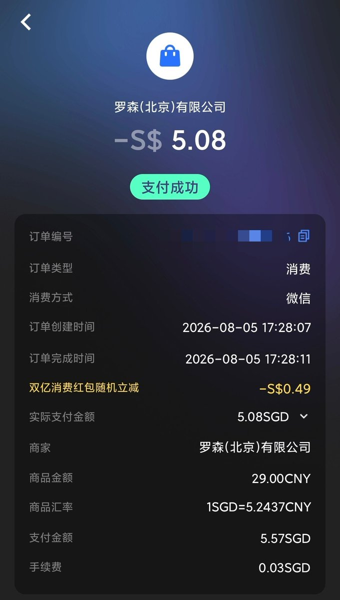

之前走我推荐开户Starryblu的，可以填写问卷加白开卡，直接放uid就行
据BD团队的小姐姐说15号就截止白名单了，我就把问卷链接丢评论区好了，没走我邀请的就别填了会被滤掉
这是一家跟wise、revolut差不多的支付工具，支持微信支付！由熊猫速汇那波人搞的，直接线上完成护照开户即可获取万事达虚拟卡和实体卡

据BD团队的小姐姐说15号就截止白名单了，我就把问卷链接丢评论区好了，没走我邀请的就别填了会被滤掉
这是一家跟wise、revolut差不多的支付工具，支持微信支付！由熊猫速汇那波人搞的，直接线上完成护照开户即可获取万事达虚拟卡和实体卡

开户链接：https://t.co/G19nQHpeGZ （推荐码MWQK00K）
需准备护照、人脸识别，地址证明可用：身份证、银行账单、水电账单（三选一），审核时间大概10分钟
填我邀请码，可通过问卷提交加白，下卡后可申请实体卡（10SGD邮寄费）👉 https://t.co/3yetfcQh1u
需准备护照、人脸识别，地址证明可用：身份证、银行账单、水电账单（三选一），审核时间大概10分钟
填我邀请码，可通过问卷提交加白，下卡后可申请实体卡（10SGD邮寄费）👉 https://t.co/3yetfcQh1u